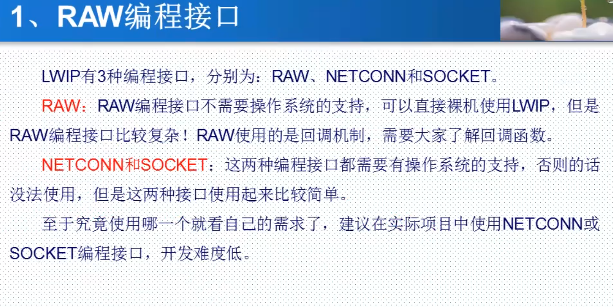
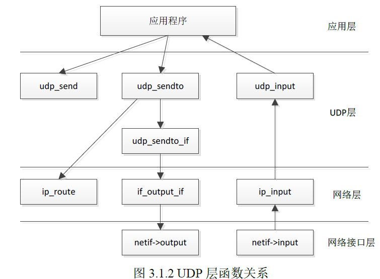
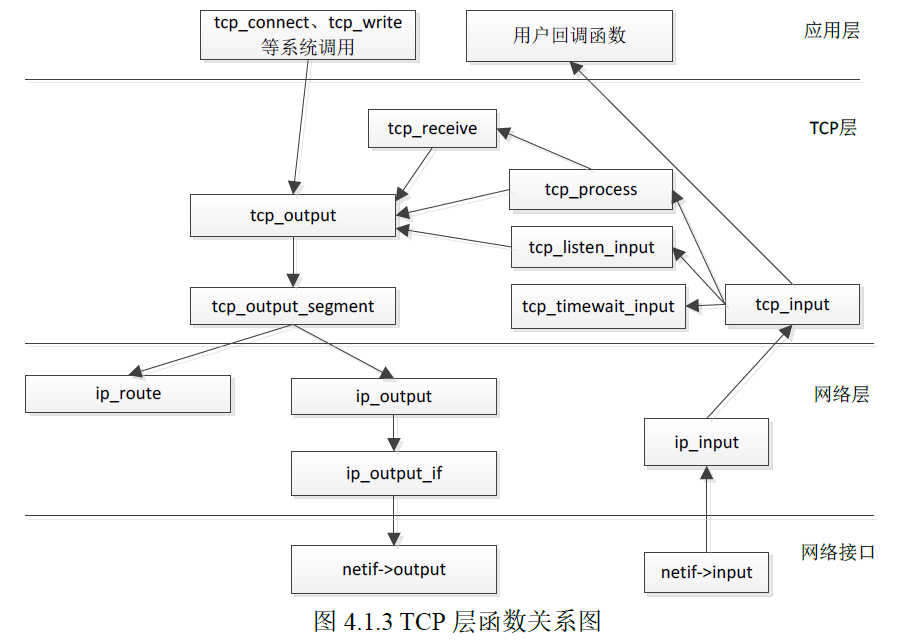
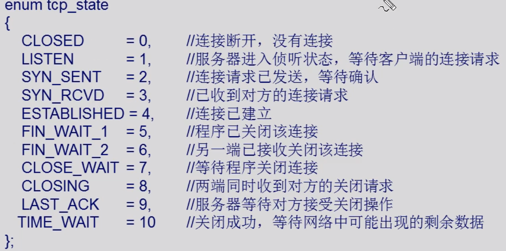
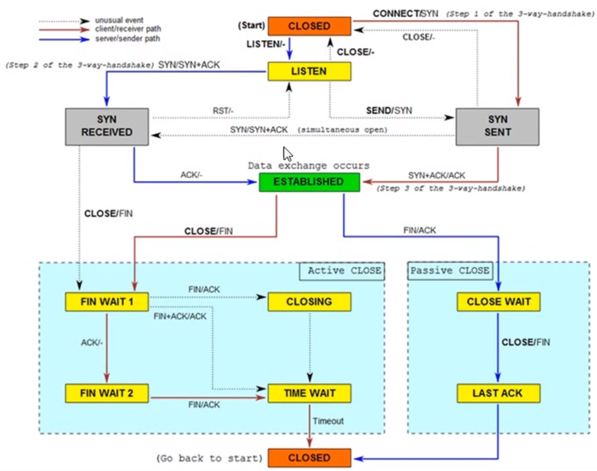
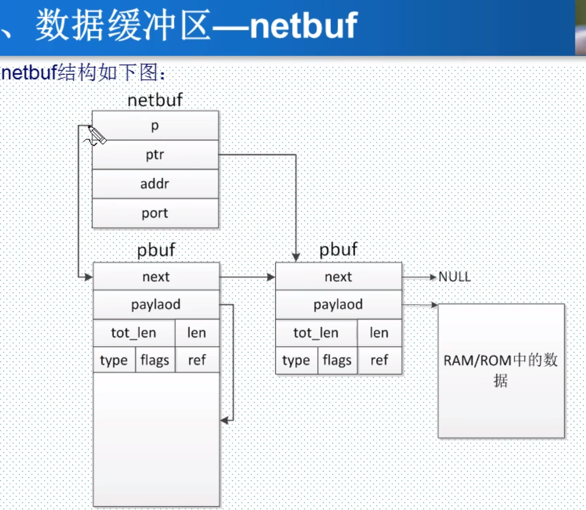
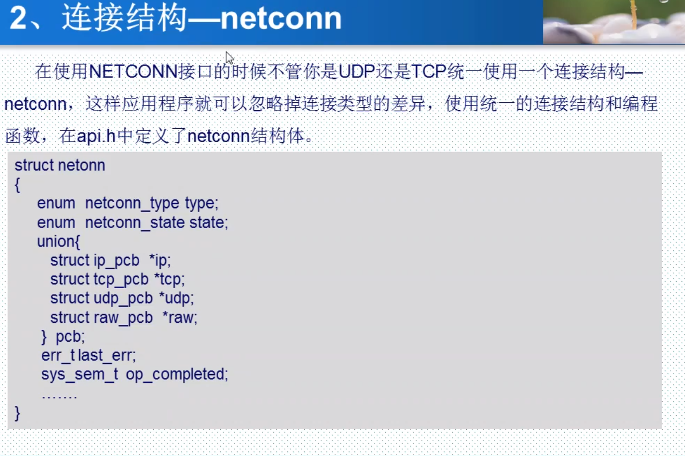
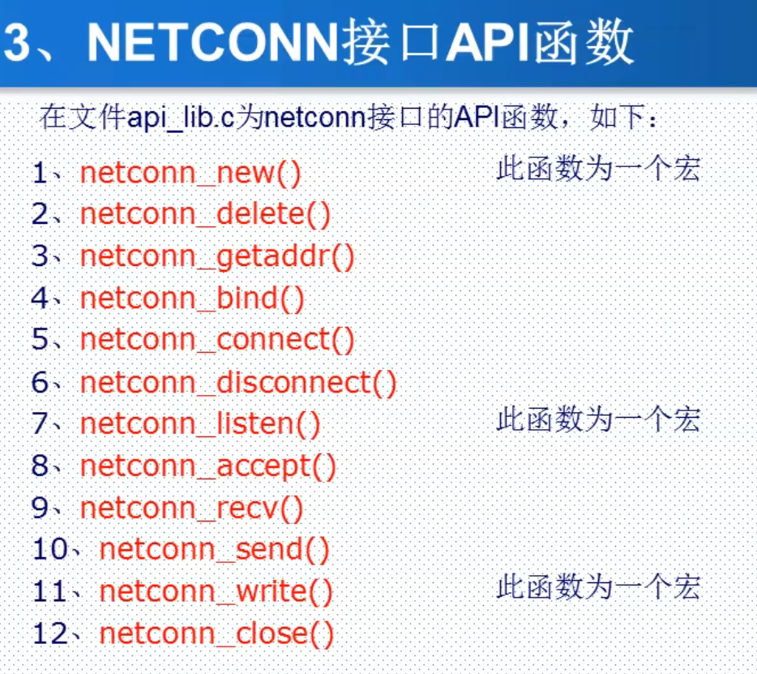
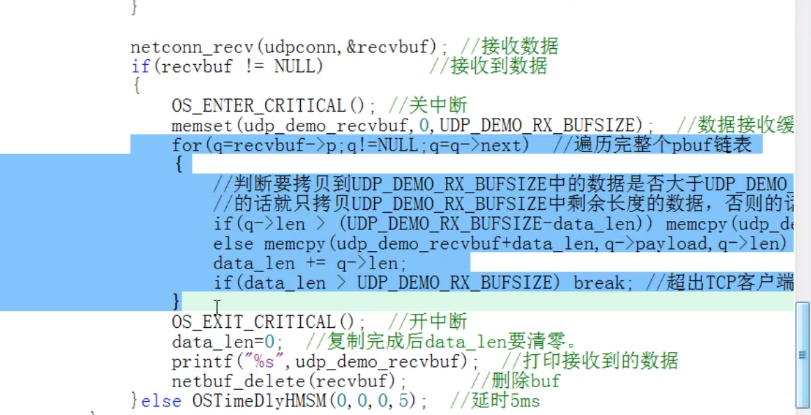

LWIP#

socket需要用到内存拷贝
netconn不需要用到内存拷贝
前两者使用都需要使用操作系统
raw编程方式可以不使用操作系统，主要使用的是回调函数
3. RAW编程接口#
1. LWIP数据包和网络接口管理#
1.1 LWIP数据包管理#
LWIP使用pbuf结构体描述协议栈使用中的数据包，pbuf结构体在pbuf.h中定义
1.2 LWIP网络接口管理#
netif结构体实现对网络接口的描述，在netif.h中定义
netif_add() 网卡注册函数 把一个netif结构体添加在netif_list中
3. RAW编程接口#
- LWIP的RAW API编程方式是基于回调机制的，初始化应用时，需要将内核中不同的事件注册相应的回调函数。
3.1 UDP简介#
- UDP常用的功能函数
| RAW API函数 | 说明 |
|---|---|
| udp_new | 新建udp的pcb控制块 |
| udp_remove | 将一个pcb控制块从链表中删除，并释放该控制块的内存 |
| udp_bind | 给udp的pcb控制块绑定一个本地ip地址与端口号 |
| udp_connect | 连接指定ip地址的指定端口（设置pcb控制块的remote_ip与remote_port） |
| udp_disconnect | 断开连接 |
| udp_send | 通过pcb控制块发送消息 |
| udp_recv | 注册回调函数，接收数据时调用 |
- RAW API编程接口中与UDP相关的函数关系

- 连接流程
3.1 初始化
- lwipdev.remoteip[]设置ip
- udp_new 创建udp的pcb控制块
- IP4_ADDR ：将lwipdev.remoteip[]的四字节地址设置为ip地址
- udp_connect：upd客户端连接到指定IP地址和端口号的服务器
- udp_bind：绑定本地的IP地址与端口号
- udp_recv：注册接收回调函数
- 调用LWIP轮询任务，正点原子：lwip_periodic_handle()。
- lwip_pkt_handle()
3.2 发送函数
- udp_send
3.3 接收到数据后需要调用
-
ethernetif_input() 。
-
之前在添加网卡(netif_add)时，注册的函数
1
> 作用：从网路缓冲区中读取数据包，并发给LWIP处理
3.3 关闭连接
-
udp_disconnect()断开udp连接
-
udp_remove() 将pcb控制块从链表中删除，释放内存
- 创建udp时若失败，也需要将其关闭，删除。
3.2 TCP简介#
- TCP的RAW API常用函数
| 函数分组 | API函数 | 函数功能描述 |
|---|---|---|
| TCP建立连接 | tcp_new() | 创建一个TCP的PCB控制块 |
| tcp_bind() | 为TCP的PCB控制块绑定一个本地的IP地址和端口号 | |
| tcp_listen() | 监听TCP的PCB | |
| tcp_accept() | 控制块accept字段注册的回调函数，监听到连接时调用 | |
| tcp_accepted() | 通知LIWIP协议栈，一个TCP已经被连接 | |
| tcp_conect() | 连接远程主机 | |
| 发送TCP数据 | tcp_write() | 构建一个报文，并放在控制块的发送缓冲队列中 |
| tcp_sent() | 控制块sent字段注册的回调函数，数据发送成功后被回调 | |
| tcp_output() | 将发送缓冲队列中的数据发送出去 | |
| 接收TCP数据 | tcp_recv() | 控制块recv字段注册的回调函数，当接收到新数据时被调用 |
| tcp_recved() | 当程序处理完数据后一定要调用此函数，通知内核更新接收窗口 | |
| 轮询函数 | tcp_poll() | 控制块poll字段注册的回调函数，该函数周期性调用 |
| 关闭和中止连接 | tcp_close() | 关闭TCP连接 |
| tcp_err() | 控制块err字段注册的回调函数，遇到错误时被调用 | |
| tcp_abort() | 中断TCP连接 |
- RAW API编程接口中与TCP相关的函数关系

-
TCP状态
-
LWIP中在tcp.h中通过枚举类型定义出了TCP的11种状态：tcp_state
- 说明
- 
- 状态图

- 连接流程
3.1 初始化
- tcp_new()；创建TCP控制块
- IP4_ADDR ()；设置远端IP地址
- tcp_connect()；连接到远端IP地址的指定端口号上，连接成功后回调注册的connected参数所对应的函数
- 建立连接后，回调函数中设置相应函数
- tcp_arg()：
- tcp_recv()：
- tcp_err()：
- tcp_sent()：
- tcp_poll()：
- 调用LWIP轮询任务，正点原子：lwip_periodic_handle()。
- lwip_pkt_handle()
4. NETCONN编程方式#
4.1 简介#




netconn_send()函数用于udp连接上发送数据
netconn_write()函数用于tcp连接上发送数据
recv函数是阻塞的，设置超时时间后，便不会阻塞线程
udp
10ms不会丢包
5ms丢包

想要速度更快，把这个遍历拷贝编程以太网转串口，直接写到串口寄存器，串口打印，避免程序中的延时
实际应用时 发送与接收各自创建一个线程任务